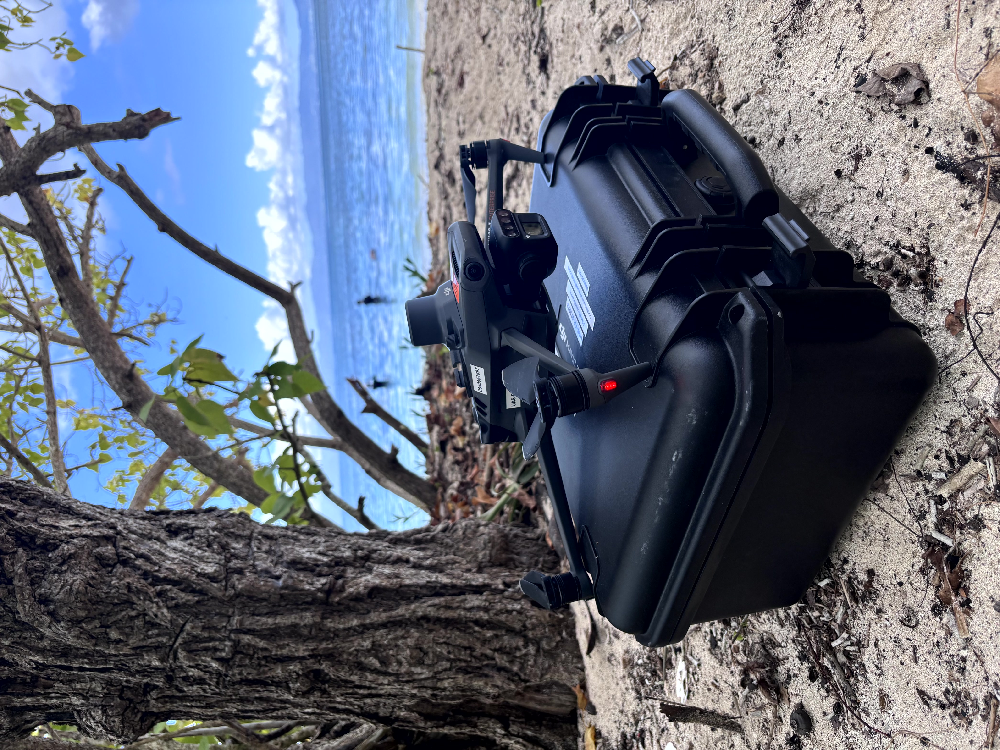

Galerie
Photos et vidéos drone en Guadeloupe
Images et vidéos captées lors de missions en Guadeloupe et dans les Antilles françaises.
Vidéos
Missions filmées par drone

▶ Vidéo
Survol du Moulin — Petit-Canal

▶ Vidéo
Drone en action — DJI M3M
Terrain & Environnement
Nature et paysages de Guadeloupe

Photo
Littoral — Guadeloupe

Photo
Zone humide
Agriculture
Cultures et végétation en Guadeloupe

Photo
Bananerais — survol

Photo
Agriculture
Technique & BTP
Inspection et habitations en Guadeloupe

Photo
Habitation
Photo
Moulin — Petit-Canal